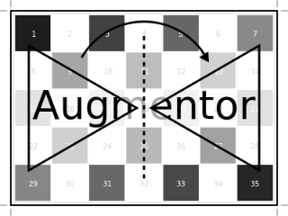

ConvertEltype: Color conversion
Augmentor.ConvertEltype — Type.ConvertEltype <: Augmentor.OperationDescription
Convert the element type of the given array/image into the given eltype. This operation is especially useful for converting color images to grayscale (or the other way around). That said the operation is not specific to color types and can also be used for numeric arrays (e.g. with separated channels).
Note that this is an element-wise convert function. Thus it can not be used to combine or separate color channels. Use SplitChannels or CombineChannels for those purposes.
Usage
ConvertEltype(eltype)Arguments
eltype: The eltype of the resulting array/image.
See also
CombineChannels, SplitChannels, augment
Examples
julia> using Augmentor, Colors
julia> A = rand(RGB, 10, 10) # three color channels
10×10 Array{RGB{Float64},2}:
[...]
julia> augment(A, ConvertEltype(Gray)) # convert to grayscale
10×10 Array{Gray{Float64},2}:
[...]
julia> augment(A, ConvertEltype(Gray{Float32})) # more specific
10×10 Array{Gray{Float32},2}:
[...]| Input | ConvertEltype(GrayA) |
|---|---|
 |  |